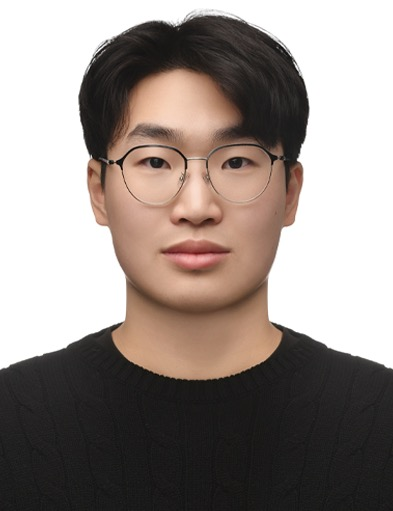
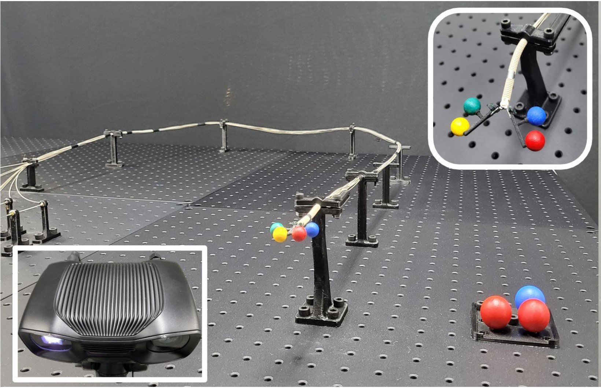
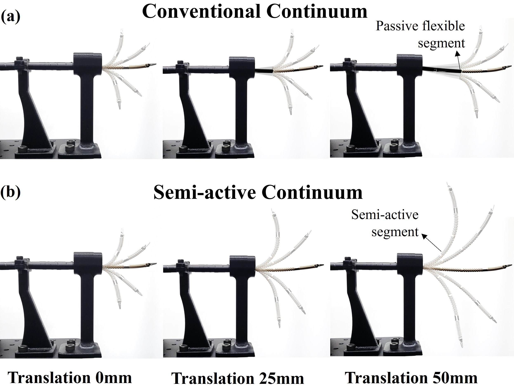
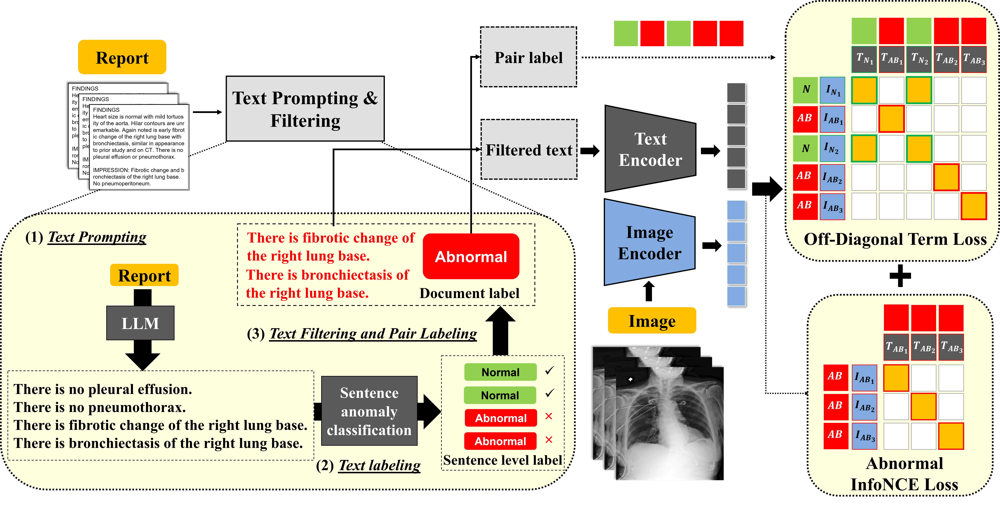
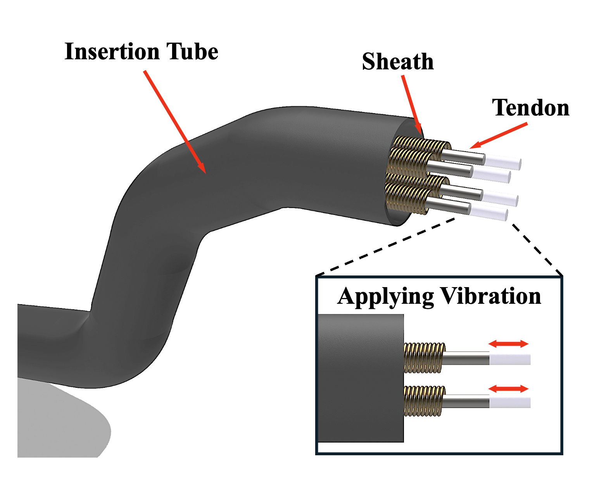
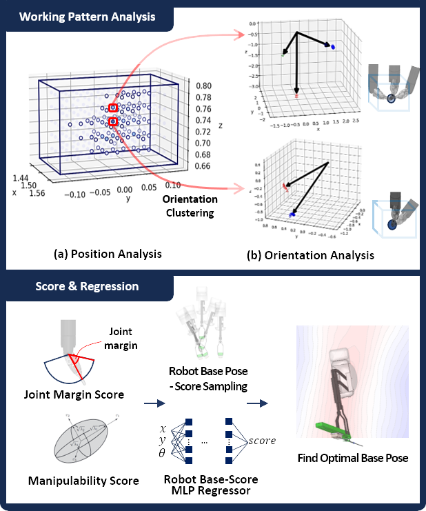
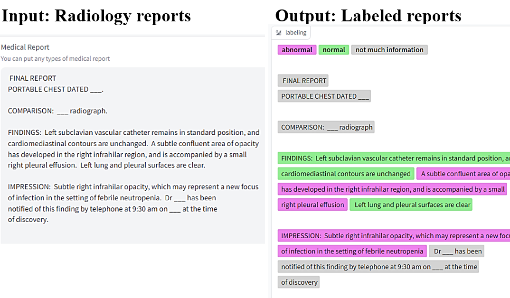
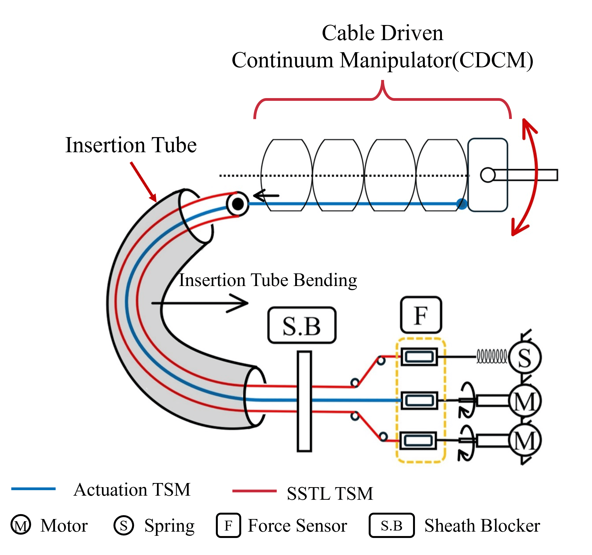
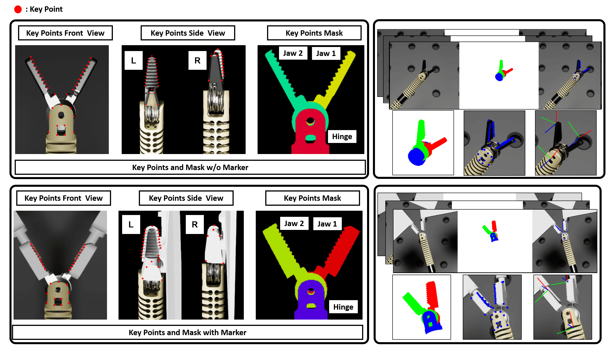

DEEPNOID, AI Research Lab — Multimodal Team
Researcher (Alternative Military Service)
Researcher (Alternative Military Service)
Feb 2026 — Present
Researcher, DEEPNOID · M.S., DGIST (2026)
I am a researcher at DEEPNOID, working on medical foundation models for chest X-ray, CT, and MRI — vision-language modeling, self-supervised learning, and report generation.
I received my M.S. in Robotics & Mechatronics Engineering and B.E. in Computer Science & Electrical Engineering (double major, summa cum laude) from DGIST, advised by Prof. Minho Hwang. In the summer of 2023, I interned at the Massachusetts General Hospital, Harvard Medical School, advised by Prof. Synho Do and Prof. Kyungsu Kim.
My research aims toward fully automated surgical pipelines — AI-driven diagnosis from medical imaging, coupled with continuum manipulators that navigate natural orifices to perform scar-free interventions.

* denotes equal contribution.

A data-driven TCN approach captures the nonlinear, history-dependent characteristics of cable actuation, enabling real-time hysteresis compensation. Reduces position error by 61.4% (13.7 → 5.29 mm) and orientation error by 64.0% (31.2° → 11.2°).

An extensible cable-driven continuum manipulator with a semi-active mechanism (SAM) and a TCN-based real-time hysteresis compensation algorithm. SAM improves lesion access, while TCN-based compensation enhances accuracy.

OFF-CLIP uses an off-diagonal loss and sentence-level text filtering to improve normal detection and reduce false negatives, enhancing both zero-shot classification and anomaly localization.

Controlled vibration reduces friction and dead zones in tendon-sheath mechanisms, improving trajectory tracking. Combined with DL-based hysteresis compensation, achieves 85% reduction in hysteresis.

A machine learning approach to determine the optimal robot base pose based on a surgeon's working pattern. End-effector pose clustering identifies key positions, with scoring that accounts for joint limits and singularities.

The first in-hospital adaptation of a cloud-based LLM into a secure, on-premise model for radiology report analysis. A sentence-level contrastive knowledge distillation achieves >95% accuracy in anomaly detection while preserving patient privacy.


© Junhyun Park · Last updated June 2026